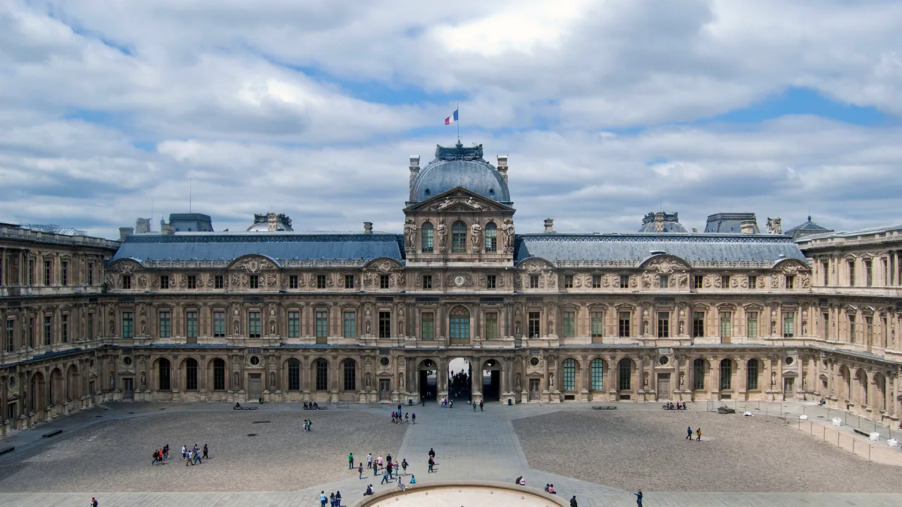
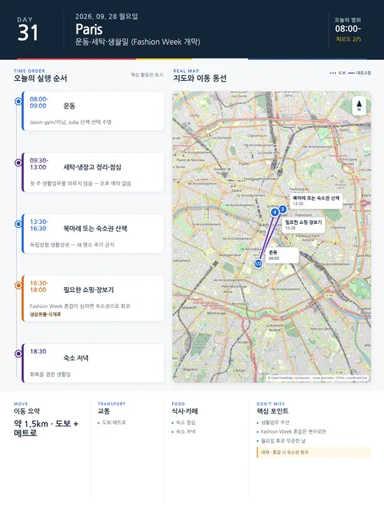

Day 31 · 9/28 월 · Paris

오늘의 주요 장소
- 핵심 실행
- 운동·세탁·생활일 (Fashion Week 개막)
- 권장 출발
- 느린 시작
- 완충
- 생활업무 보호
시간표
| 시간 | 일정 | 실행 포인트 |
|---|---|---|
| 08:00–09:00 | 운동 | Jason gym 또는 러닝, Julia 산책/선택 수영 |
| 09:30–11:30 | 세탁·냉장고 정리 | 첫 주 생활업무를 미루지 않음 |
| 12:00–13:00 | 숙소 점심 | 오후 예약 없음 |
| 13:30–16:30 | 북마레 또는 숙소권 주거지 산책 | 독립상점·생활상권, 새 명소 추가 금지 |
| 16:30–18:00 | 필요한 쇼핑·장보기 | Fashion Week 혼잡이 심하면 숙소권으로 회귀 |
| 저녁 | 숙소식·일찍 귀가 | Paris Fashion Week 개막일이지만 초청제 쇼를 일정화하지 않음 |
피로도
2/5
이 날의 메모
운동, 세탁, 쇼핑 — Fashion Week가 시작되는 생활일 로컬 라이프
성격:** 회복을 겸한 생활일. Fashion Week의 교통·식당 혼잡은 변수로만 기록한다.
상세 실행 확인
- 최고 리스크
- Fashion Week 혼잡
- 우선 삭제
- 북마레 산책
- 대체안
- 숙소권 회귀
- 식사·휴식
- 숙소 점심
- 잠금 필요
- 없음
Daily Action Map

실제 좌표와 OpenStreetMap을 사용한 실행용 요약입니다. 도로·대중교통 상황은 출발 직전에 다시 확인하세요.